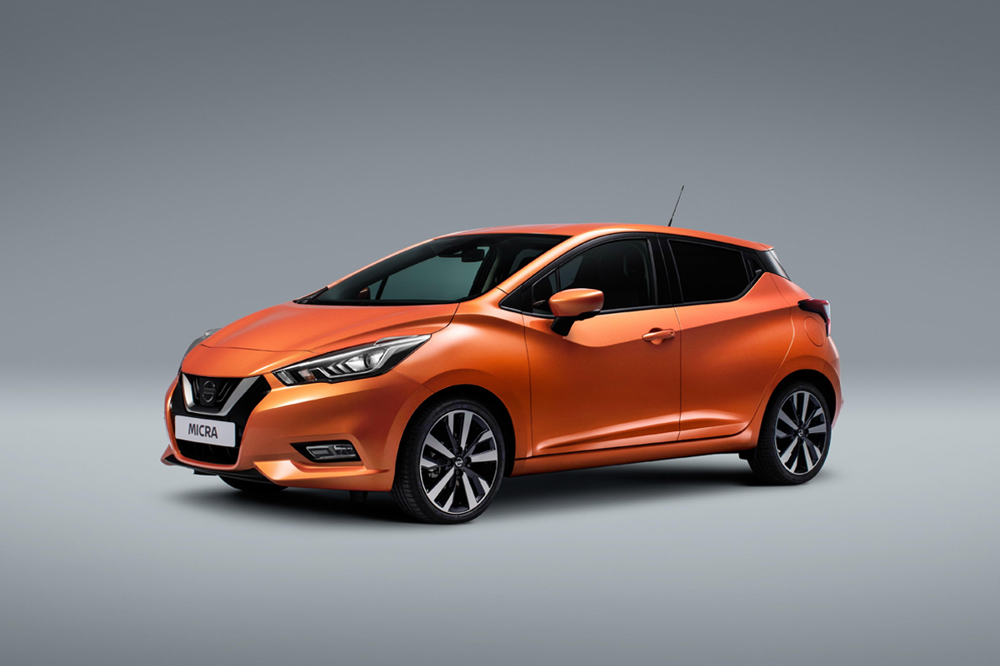
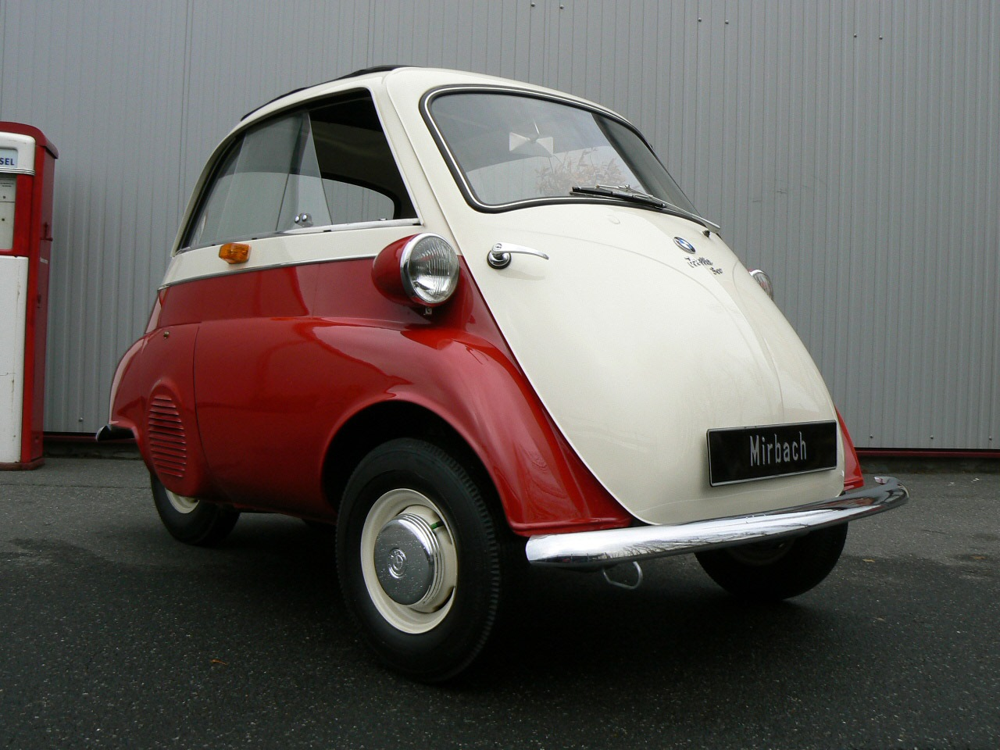
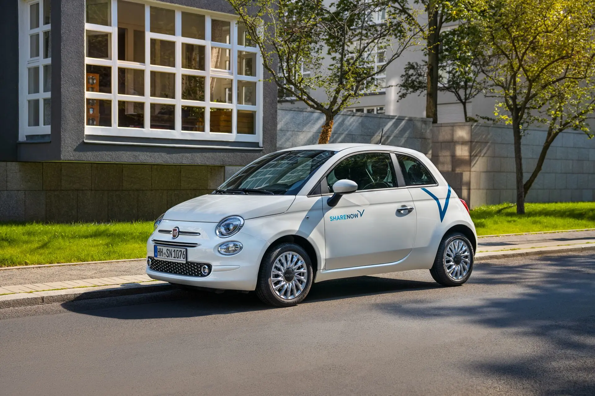

Кузов МИКРО

Микро (Micro) – это тип автомобильного кузова, относящийся к самым компактным транспортным средствам, предназначенным в основном для городского использования.
Основные характеристики:
- Размеры: Очень маленькие, обычно длина не превышает 3 метров.
- Масса: До 500 кг (в Европе микрокары часто подпадают под категорию квадроциклов).
- Двигатель: Малолитражные ДВС (до 700 см³) или электромоторы.
- Вместимость: Чаще всего 1-2 человека, иногда 3-4 при особой компоновке.
- Безопасность: Минимальная по сравнению с полноразмерными автомобилями, но современные модели оснащаются базовыми системами защиты.
Популярные примеры микрокаров:
- Smart Fortwo – один из самых известных городских микромобилей.
- BMW Isetta – культовый микрокар 50-х годов с фронтальной дверью.
- Fiat 500 – итальянский микроавтомобиль.
- Peel P50 – самый маленький серийный автомобиль в мире.
- Ligier, Aixam – французские микрокары, которые можно водить без прав в некоторых странах.

BMW Isetta

Fiat 500
Преимущества:
- Отличная манёвренность в городе.
- Удобство парковки.
- Экономичность (низкий расход топлива или электрозаряда).
- Доступность (относительно невысокая стоимость).
Недостатки:
- Низкий уровень безопасности.
- Маленький багажник и ограниченное количество мест.
- Плохая проходимость и слабый двигатель для трасс.
Микрокары популярны в Европе и Японии, где городские улицы узкие, а парковка ограничена. В больших странах они встречаются реже, но набирают популярность среди каршеринга и электромобилей.